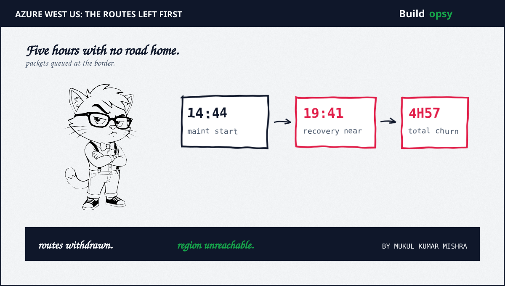
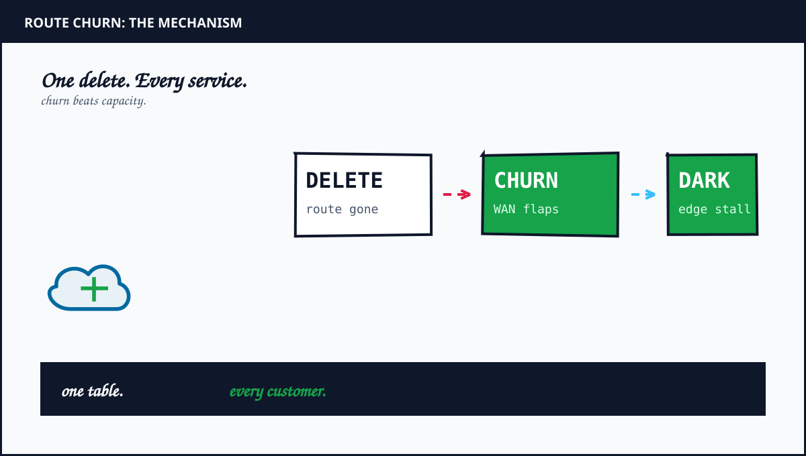
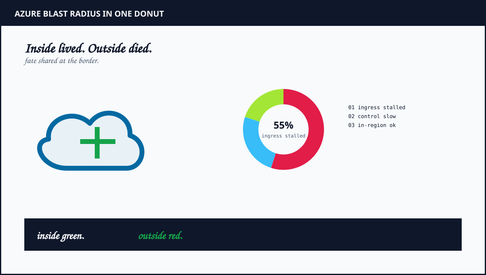
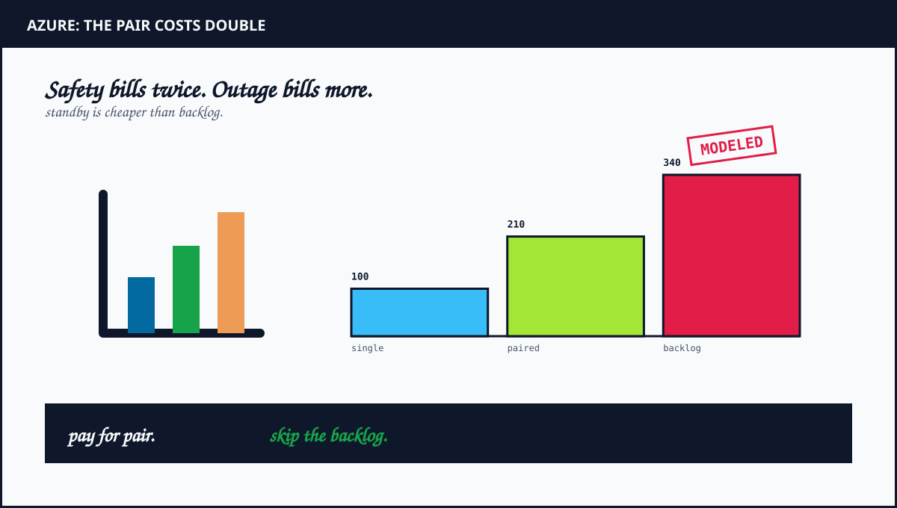

1. The Maintenance That Deleted the Map
Every large cloud runs a wide area network that carries customer traffic between regions plus between the cloud plus the public internet. Routers in each data center advertise which address ranges live behind them. Neighbors trust those advertisements. Packets follow the map.
On July 23 the map lost pages. Device maintenance in one West US data center triggered a faulty automation that removed critical routes instead of draining them gracefully. Neighboring routers saw withdrawals. They recomputed paths. Some paths flapped as withdrawals propagated in waves. Microsoft described the early signal as large scale route churn in the WAN. That phrase matters. It means the control plane kept changing its mind while the data plane kept dropping packets.
Traffic that stayed inside West US never needed the missing routes. It kept flowing. Traffic that entered or left the region needed exactly those routes. It stalled. That split explains the blast list. Outlook plus Teams plus SharePoint plus OneDrive plus Copilot plus Xbox Live plus Microsoft Store all cross region boundaries on nearly every request. Azure App Service plus Application Gateway plus AKS plus Cosmos DB plus Postgres plus Monitor plus Graph plus Sentinel plus VPN Gateway all depend on the same WAN paths for control calls plus replication plus telemetry.
2. Why Everything Failed Together
Correlated failure needs a shared dependency. Here the shared dependency was the route set that carried ingress plus egress for West US. Application Gateway terminates TLS at the edge then forwards into the region. With routes gone the forward path has no next hop. Requests queue at the edge. Timeouts climb. Retries multiply.
AKS adds a second coupling. The Kubernetes control plane talks to nodes over the same network fabric. Image pulls stall. Admission webhooks time out. Pod scheduling slows exactly when operators want to reschedule away from trouble. Cosmos DB replication between West US plus paired regions stalls for the same reason. Postgres flexible servers lose monitor heartbeats so the control plane marks healthy instances as unknown.
Monitor failing at the same time removes the flashlight during the fire. Telemetry that must leave the region to reach central collectors never arrives. Dashboards show gaps instead of errors. Operators debug blind until in-region collectors buffer plus forward after recovery. The outage degraded the observer plus the observed through one shared path.

3. The RPS Model
Assume West US normally serves 900,000 ingress RPS across edge plus API plus app tiers at the affected hour. Model the failure as a capacity cliff. Usable ingress falls to 25 percent within 10 minutes as routes flap. Offered load stays constant because clients retry. Effective goodput falls to roughly 225,000 RPS while offered load climbs toward 1.4 million RPS with retries.
Retry amplification does the rest. Take a baseline retry rate of 5 percent. Under timeout storms clients escalate to 3 attempts per logical request. Offered load multiplies by nearly 2.9 times. Edge queues that drain in milliseconds now drain in seconds. Latency p99 crosses client timeouts. More requests qualify as failed. More retries spawn. The WAN fault starts the fire. The retry policy pours fuel.
In-region traffic tells the control story. Assume 300,000 RPS of east-west traffic inside West US kept serving at normal latency. That number proves the compute plus storage layers were healthy. The bottleneck sat strictly at the border. Any design that treats region health as a single boolean would have called West US down. The truth was finer. The border was down. The interior lived.
| Workload | Scenario | Modeled RPS |
|---|---|---|
| Normal ingress | steady hour before maintenance | 900k avg |
| Usable ingress | routes flapping, 25 pct usable | 225k goodput |
| Offered with retries | 3 attempts per logical request | 1.4M offered |
| In-region east-west | never crossed the border | 300k healthy |

4. What Went Wrong in the Design
Maintenance automation could delete production routes without a canary. A job that removes routes should first withdraw one prefix plus watch churn rate plus error budget for a fixed window. The incident timeline shows disruption starting within a minute of maintenance begin. That speed fits an unguarded global push, not a staged rollout.
One logical map carried all services with no bulkhead. Edge plus control plus replication plus telemetry shared fate through the same advertisements. Bulkheads that isolate compute mean little when the network map is shared. The map needs cells too, with per-service route sets that fail independently.
Clients retried across the outage instead of shedding. Outlook plus Teams plus Store clients treated timeouts as transient plus retried aggressively. Aggressive retries turn a 75 percent capacity loss into a 6 times overload at the surviving edge. Admission budgets at the edge should have shed load early plus returned fast errors instead of slow timeouts.
Recovery depended on the same WAN that failed. Pushing corrected routes requires a working control channel to the affected routers. If the channel shares fate with customer traffic, the fix queues behind the fire. Out-of-band management paths must exist before the incident, not after.
Route churn plus cell isolation plus paired-region failover is where the Kubernetes production course turns hard. Take Lesson 11 →
5. The Cost Model
Assume a mid-size SaaS serving 40,000 RPS from West US with a paired region in West US 2 held warm. Single-region compute plus data plus edge costs a modeled $48,000 per month. Holding the pair warm with replicated Cosmos DB plus standby AKS node pools plus cross-region egress raises the modeled bill to about $101,000 per month. The delta is roughly $53,000 per month for the pair.
Price the outage against that delta. Four hours fifty seven minutes of degraded ingress at 75 percent goodput loss touches roughly 10.6 billion request opportunities at 900,000 RPS. If 2 percent of affected requests map to revenue events worth a modeled $0.40 of margin each, the exposure crosses $60 million in a single evening before SLA credits plus support plus churn. Even at one tenth of that conversion the modeled exposure exceeds $6 million. The pair pays for itself against one evening.
At 1M RPS thought experiment the math hardens further. Shedding 65 percent of offered load at the edge via admission budgets cuts origin work from 1.4 million to under 500,000 RPS during the storm. If each origin request costs a modeled $0.0000012, the uncontrolled storm burns about $6.05 per second. The gated storm burns about $2.16 per second. Over five hours the delta exceeds $70,000 in origin compute alone, before revenue impact.
| Cost center | Modeled monthly | What moves it |
|---|---|---|
| Single region | $48k | compute plus data plus edge |
| Paired region warm | $101k | replica plus standby plus egress |
| Storm origin delta | $70k per 5h at 1M scale | admission gating on or off |
| Outage exposure | $6M plus per evening | revenue mix plus duration |
6. The Verdict
Microsoft found the cause fast plus communicated the window honestly. Credit belongs there. The architecture still let one maintenance job in one building remove the map for a region. That is the actual postmortem. Route automation without canaries plus shared fate across all services plus retry storms plus in-band recovery turned a device task into a continental evening.
The fix travels beyond Azure. Every cloud has a WAN map with the same power. Canary every route change. Cell the map per service. Shed load at the edge early. Keep an out-of-band path to push the fix. Or schedule the same evening under a different region name. The packets will wait. Customers will not.
Four hours fifty seven minutes of churn. One deleted map. The interior lived while the border died.

Sources and Method
Timeline plus affected services plus route churn cause follow the Azure preliminary review as reported in press plus the Azure reliability docs. RPS plus cost numbers are a labeled scenario model. Architecture advice is at system level, not a reproduction guide.